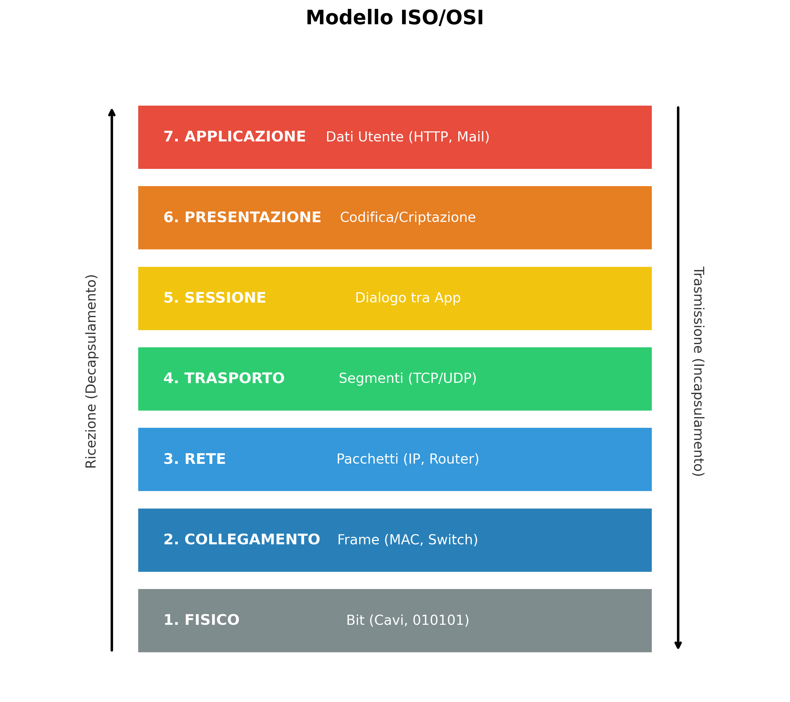
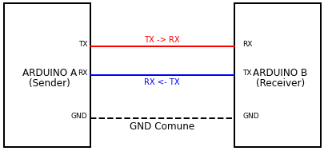

Il Computer "Stand-Alone"
Prima di capire le reti, dobbiamo capire cosa succede quando una rete NON c'è.
Definizione
Un computer si definisce stand-alone (autonomo) quando opera in completo isolamento.
Caratteristiche Principali
- Isolamento Totale: Niente internet, niente condivisione.
- Sicurezza Fisica: Dati sicuri se nessuno tocca il PC.
- Trasferimento: Solo tramite USB ("Sneakernet").
La Rete Domestica (SOHO)
Il primo passo verso la connessione globale.
Componenti Fondamentali
- Host: PC, Smartphone, Tablet.
- Intermediari: Router, Switch, Access Point.
- Mezzi: Cavi Ethernet, WiFi.
Il Modello ISO/OSI
Il modello di riferimento per capire come comunicano i computer. È diviso in 7 "strati".

I 7 Livelli (Dall'alto verso il basso)
- 7. Applicazione:
È l'interfaccia con l'utente (es. Chrome, Outlook). È dove i dati vengono creati e visualizzati.
- 6. Presentazione:
"Il Traduttore". Si occupa di formattare, cifrare o comprimere i dati affinché siano leggibili (es. JPG, MP3, SSL).
- 5. Sessione:
"Il Vigile". Mantiene attiva la connessione tra due dispositivi, decidendo chi parla e per quanto tempo.
- 4. Trasporto:
(TCP/UDP) Spezzetta i dati in pacchetti più piccoli (segmenti) e controlla che arrivino tutti a destinazione.
- 3. Rete:
(IP, Router) "Il Postino". Aggiunge l'indirizzo mittente/destinatario e sceglie la strada migliore (routing) nel traffico.
- 2. Collegamento:
(MAC, Switch) Organizza i dati in "frame" per il passaggio fisico e gestisce l'accesso al cavo o al WiFi.
- 1. Fisico:
(Bit) La trasmissione pura. Trasforma i dati digitali (0 e 1) in segnali elettrici, luce o onde radio.
Mappa del Sito Interattiva
Clicca sugli argomenti per andare direttamente alla sezione.
- 🏠 Home Page
- Concetto di Stand-Alone
- Componenti Rete Domestica
- 📚 Teoria
- Modello ISO/OSI
- Descrizione dei 7 Livelli
- 🔧 Laboratorio
- Arduino: Ping-Pong Seriale
- Codice Sorgente Arduino
Laboratorio: Comunicazione Seriale
Simuliamo una rete tra due Arduino.

L'esperimento "PING-PONG"
Arduino 1 invia PING, Arduino 2 risponde PONG.
Codice Arduino 1 - Trasmettitore:
void setup() { Serial.begin(9600); }
void loop() { Serial.println("PING"); delay(1000); }
Codice Arduino 2 - Ricevitore:
void setup() { Serial.begin(9600); }
void loop() { }